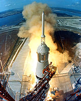

<!DOCTYPE html>
<!--
opyright (c) 2003-2016, CKSource - Frederico Knabben. All rights reserved.

r licensing, see LICENSE.md or http://ckeditor.com/license
-

<h
l>
<he
>
	<me
 charset="utf-8">
	<tit
>jQuery Adapter &mdash; CKEditor Sample</title>
	<scri
 src="http://code.jquery.com/jquery-1.11.0.min.js"></script>
	<scrip
src="../../ckeditor.js"></script>
	<script
rc="../../adapters/jquery.js"></script>
	<link hr
="sample.css" rel="stylesheet">
	<style>

		#edita

		{
			padd
g:
px;
			float: lef

		}

</styl

	<

pt>

	C
DITOR.dis

AutoInline = true;


$( document )

dy( function() {
			$( '#editor1' )
keditor(); // Use CKEDITOR.replace() if element is <textarea>.
			$( '#editable' )
keditor(); // Use CKEDITOR.inline().
		} );


function
etValu

{
			$( '#editor1' ).va
 $( 'input#val' ).val() );
		}


/script>
<

d>


y>
	<h1 cl
s="samp
s">

 href="index.html" id
a-test">CKEditor Samples</a> &raquo; Create Editors with jQuery
	</h1>

iv class="warni
 depre
ted">
		This sample is not mainta
ed anymore. Check out the <a href="http://sdk.ckeditor.com/">brand new samples in CKEditor SDK</a>.
	</div>

orm action="samp
_posted
ta.php" method="post">
		<div class="description">


p>
				This sample shows
w to u
 the <a href="http://docs.ckeditor.com/#!/guide/dev_jquery">jQuery adapter</a>.
				Note that you have to inclu
 both CKEditor and jQuery scripts before including the adapter.
			</p>

p
 class="samples">
&lt;scr

src="//ajax.googleapi
com/ajax/libs/jquery/1.9.1/jquery.min.js"&gt;&lt;/script&gt;
&lt;script src="/ckedit../../cked
or.js"&gt;&lt;/script&gt;
&lt;script src="/ckeditor/adapters
query.js"&gt;&lt;/script&gt;
</pre>


p>Then you can replac
HTML e

nts with a CKEditor instance using the <code>ckeditor()</code> method.</p>

p
 class="samples">
$(
cument

eady( function() {
	$
'textarea#editor1' ).ckeditor();

);
</pre>

<
iv>


class="
mple
>Inlin
Example<


<d
 id="editable" contenteditable="

">
			<p><b>Apollo 11</b> was the spaceflight that landed the first humans, Americans <a href="http://en.wikipedia.org/wiki/Neil_Armstrong" title="Neil Armstrong">Neil Armstrong</a> and <a href="http://en.wikipedia.org/wiki/Buzz_Aldrin" title="Buzz Aldrin">Buzz Aldrin</a>, on the Moon on July 20, 1969, at 20:18 UTC. Armstrong became the first to step onto the lunar surface 6 hours later on July 21 at 02:56 UTC.</p>
			<p>Armstrong spent about <s>three and a
alf</s> two and a half hours outside the spacecraft, Aldrin slightly less; and together they collected 47.5 pounds (21.5&nbsp;kg) of lunar material for return to Earth. A third member of the mission, <a href="http://en.wikipedia.org/wiki/Michael_Collins_(astronaut)" title="Michael Collins (astronaut)">Michael Collins</a>, piloted the <a href="http://en.wikipedia.org/wiki/Apollo_Command/Service_Module" title="Apollo Command/Service Module">command</a> spacecraft alone in lunar orbit until Armstrong and Aldrin returned to it for the trip back to Earth.
			<p>Broadcast on live TV to a world-wide
dience, Armstrong stepped onto the lunar surface and described the event as:</p>
			<blockquote><p>One small step for [a] man
one giant leap for mankind.</p></blockquote> <p>Apollo 11 effectively ended the <a href="http://en.wikipedia.org/wiki/Space_Race" title="Space Race">Space Race</a> and fulfilled a national goal proposed in 1961 by the late U.S. President <a href="http://en.wikipedia.org/wiki/John_F._Kennedy" title="John F. Kennedy">John F. Kennedy</a> in a speech before the United States Congress:</p> <blockquote><p>[...] before this decade is out, of landing a man on the Moon and returning him safely to the Earth.</p></blockquote>
		</div>


style="clear: both">


<

ass="

les">Classic (iframe-based

ample</h2>


<te
area cols="80" id="editor1" name="edi

" rows="10">
			&lt;h2&gt;Technical details &lt;a id=&quot;t
h-details&quot; name=&quot;tech-details&quot;&gt;&lt;/a&gt;&lt;/h2&gt; &lt;table align=&quot;right&quot; border=&quot;1&quot; bordercolor=&quot;#ccc&quot; cellpadding=&quot;5&quot; cellspacing=&quot;0&quot; style=&quot;border-collapse:collapse;margin:10px 0 10px 15px;&quot;&gt; &lt;caption&gt;&lt;strong&gt;Mission crew&lt;/strong&gt;&lt;/caption&gt; &lt;thead&gt; &lt;tr&gt; &lt;th scope=&quot;col&quot;&gt;Position&lt;/th&gt; &lt;th scope=&quot;col&quot;&gt;Astronaut&lt;/th&gt; &lt;/tr&gt; &lt;/thead&gt; &lt;tbody&gt; &lt;tr&gt; &lt;td&gt;Commander&lt;/td&gt; &lt;td&gt;Neil A. Armstrong&lt;/td&gt; &lt;/tr&gt; &lt;tr&gt; &lt;td&gt;Command Module Pilot&lt;/td&gt; &lt;td&gt;Michael Collins&lt;/td&gt; &lt;/tr&gt; &lt;tr&gt; &lt;td&gt;Lunar Module Pilot&lt;/td&gt; &lt;td&gt;Edwin &amp;quot;Buzz&amp;quot; E. Aldrin, Jr.&lt;/td&gt; &lt;/tr&gt; &lt;/tbody&gt; &lt;/table&gt; &lt;p&gt;Launched by a &lt;strong&gt;Saturn V&lt;/strong&gt; rocket from &lt;a href=&quot;http://en.wikipedia.org/wiki/Kennedy_Space_Center&quot; title=&quot;Kennedy Space Center&quot;&gt;Kennedy Space Center&lt;/a&gt; in Merritt Island, Florida on July 16, Apollo 11 was the fifth manned mission of &lt;a href=&quot;http://en.wikipedia.org/wiki/NASA&quot; title=&quot;NASA&quot;&gt;NASA&lt;/a&gt;&amp;#39;s Apollo program. The Apollo spacecraft had three parts:&lt;/p&gt; &lt;ol&gt; &lt;li&gt;&lt;strong&gt;Command Module&lt;/strong&gt; with a cabin for the three astronauts which was the only part which landed back on Earth&lt;/li&gt; &lt;li&gt;&lt;strong&gt;Service Module&lt;/strong&gt; which supported the Command Module with propulsion, electrical power, oxygen and water&lt;/li&gt; &lt;li&gt;&lt;strong&gt;Lunar Module&lt;/strong&gt; for landing on the Moon.&lt;/li&gt; &lt;/ol&gt; &lt;p&gt;After being sent to the Moon by the Saturn V&amp;#39;s upper stage, the astronauts separated the spacecraft from it and travelled for three days until they entered into lunar orbit. Armstrong and Aldrin then moved into the Lunar Module and landed in the &lt;a href=&quot;http://en.wikipedia.org/wiki/Mare_Tranquillitatis&quot; title=&quot;Mare Tranquillitatis&quot;&gt;Sea of Tranquility&lt;/a&gt;. They stayed a total of about 21 and a half hours on the lunar surface. After lifting off in the upper part of the Lunar Module and rejoining Collins in the Command Module, they returned to Earth and landed in the &lt;a href=&quot;http://en.wikipedia.org/wiki/Pacific_Ocean&quot; title=&quot;Pacific Ocean&quot;&gt;Pacific Ocean&lt;/a&gt; on July 24.&lt;/p&gt; &lt;hr/&gt; &lt;p style=&quot;text-align: right;&quot;&gt;&lt;small&gt;Source: &lt;a href=&quot;http://en.wikipedia.org/wiki/Apollo_11&quot;&gt;Wikipedia.org&lt;/a&gt;&lt;/small&gt;&lt;/p&gt;
		</textarea>


<

yle="overflow: hidden">
		<input style

oat: left" type="submit" value
Submit">
			<span style="float: right">

		<
put type="t
t" id="val" value="I'm using j
ery val()!" size="30">
				<input onclick="setValue();" type="button" valu
"Set value">
			</span>

</p

	</fo
>
	<div
="footer">

r>
		<


	CKEdi

- The
xt editor for the
ternet
 <a c
ss="samples" href="http://ckeditor.com/">http://ckeditor.com</a>
		</p>

<p id=
opy">
			Copyri
t &copy; 2003-2016
<a cla
="samples" href
http://cksource.com/">CKSource</a> - Frederico
			Knabben. All rights reserved.

</p>


v>
<
o
>
</h
l>
